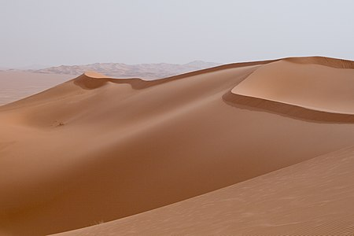

Пісок
Пісо́к, піски — осадова уламкова гірська порода і штучний матеріал, що складається із зерен гірських порід. Часто зерна піску представлені майже винятково кварцом.
Зміст
Загальна характеристика
Дрібноуламкові пухкі осадові гірські породи, що складаються з уламків різних мінералів (найчастіше кварцу) або гірських порід величиною від 0,05 до 2(3) мм (за іншими класифікаціями, 0,1—1 мм). Піщані зерна — результат вивітрювання, розмивання або абразії осадових або деяких магматичних гірських порід.
За умовами утворення піски поділяють на річкові, озерні, морські, водно-льодовикові та інші.
За розміром зерен піски класифікують на тонкозернисті (0,05—0,1 мм), дрібнозернисті (0,1—0,25 мм), середньозернисті (0,25—0,5 мм), крупнозернисті (0,5—1,00 мм), грубозернисті (1—2(3) мм).
За речовинним складом розрізнюють піски мономінеральні, що складаються із зерен головним чином одного мінералу; олігоміктні, складені зернами 2—3 мінералів з переважанням одного; і поліміктні, що складаються із зерен мінералів і гірських порід різного складу. Найчастіше трапляються піски кварцові, аркозові (кварц-польовошпатові), глауконіт-кварцові, слюдисті та інші. Домішки — слюда, карбонати, гіпс, магнетит, ільменіт, циркон тощо.
Зерна піску за формою округлі, округло-кутасті та кутасті, за ступенем обкатаності — обкатані, напівобкатані та гострокутні.повернутись до змісту
Окремі різновиди
Пісок валунний— пісок, який містить гравій, гальку та валуни. Зазвичай є продуктом перемивання проточною водою моренного матеріалу.
Пісок кварцовий — пісок, що складається більше ніж на 90 % з уламків кварцу. Зазвичай зерна добре обкатані. Матеріал добре відсортований, однорідний. Пісок кварцовий характерний для платформних районів. Утворюється як в умовах спекотного вологого клімату шляхом перевідкладення продуктів глибокого хімічного вивітрювання материнських порід, так і безвідносно до клімату у випадку тривалого перевідкладення піщаного матеріалу або формування осадів шляхом розмивання древніших кварцових пісків (пісковиків). Кварцові піски використовують для виробництва скла (30—38 % від усього видобутку), як формувальні піски при литті металів, а також для виготовлення бетону і штукатурок.
Пісок середньозернистий — пісок з розміром зерен 0,25—0,5 мм.
Пісок стандартний — фракція або суміш фракцій піску кварцового, що вміщує округлі зерна з нормованим зерновим і хімічним складом. Призначається для випробування цементу.
Річковий пісок — це будівельний пісок, добутий з русла річок, який вирізняється високим ступенем очищення і відсутністю сторонніх включень, глинистих домішок і дрібних каменів.
Кар'єрний митий пісок — пісок, видобутий в кар'єрі шляхом промивання великою кількістю води, в результаті чого з нього вимивається глина і пилоподібні частинки.
Кар'єрний сіяний пісок — це видобутий в кар'єрі просіяний пісок, очищений від каменів і великих фракцій. Кар'єрний сіяний пісок широко застосовують для виробництва розчину для кладки, штукатурних і фундаментних робіт, а також в приготуванні асфальтобетонних сумішей.
Будівельний пісок — це неорганічний сипучий матеріал з величиною зерен до 5 мм, що утворився в результаті природного руйнування скельних гірських порід і добувається при розробці піщаних і піщано-гравійних родовищ без використання або з використанням спеціального збагачувального обладнання.повернутись до змісту
Сортування
Усі матеріали, що складаються із зерен, мають природну тенденцію розташовуватися відповідно до розміру зерен, і пісок не є винятком. Це добре видно на деяких пляжах.
Різні типи піску утворюють візерунок з ліній, які проходять більш-менш паралельно ватерлінії.
Вітер має ефект сортування,тому що лише найдрібніші зерна беруться з собою, а вода також сортує зерна досить добре. З іншого боку, лід забирає все на своєму шляху, від найдрібнішого піску до каменів і валунів, тому він не має ефекту сортування.повернутись до змісту
Класифікація
густиною;
походженням і видом;
зерновим складом;
вмістом пилоподібних і глинистих частинок, у тому числі глини у грудках;
вмістом органічних домішок;
характером форми зерен;
вмістом шкідливих домішок і сполук;
міцністю;
порожнистістю;
питомою поверхнею;
стабільністю фізико-механічних властивостей.повернутись до змісту
Піски класифікують за такими ознаками:
Походження та вид
Пісок може утворюватися в процесі охолодження магми і руйнування гірської породи подібно до гравію, але твердим і малим пісок здає бо для кварцу для охолодження треба найбільше часу потім коли інші породи ніби підстрибують то вже потім коли вже потім коли кварц потрапляє до річки, де вода пісок робить більш гладкіше і кругліше, він потрапляє на берег. ще коли через приливи пісок потрапляє на скелясті береги де через тиск у кілька тон на квадратний метр частини скелі відвалюються, від кількох камінчиків писка. Це відбувається як безпосередньо через воду, так і опосередковано через силу, яку хвилі діють на повітря. Це повітря проникає в тріщини та порожнини скелі та може бути достатньо потужним, щоб розбити навколишні скелі. Піски за походженням поділяють на природні (в тому числі з попутно видобутих порід і відходів збагачення), із відходів промисловості та штучні (спеціально виготовлені).повернутись до змісту
Застосування
Піски використовують у будівництві автомобільних доріг і залізниць, для виготовлення бетонів і будівельних розчинів, у виробництві силікатних будівельних матеріалів, у виготовленні виробів грубої кераміки, покрівельних рулонних матеріалів, у цементному, а також у ливарному виробництві (піски формувальні). Пісок широко застосовують для виробництва скла, кераміки, порцеляни, фаянсу, цегли, цементу. повернутись до змістуПідсумуємо
Пісок (SiO2) входить до складу деяких живих організмів. Масова частка його у крові та плазмі людини становить 0,001 %. Проте штучне проникнення пилу піску в живі тканини шкідливе, спричиняє подразнення бронхів, силікоз легенів, захворювання шлунково-кишкового тракту.
возвратПісок (SiO2) входить до складу деяких живих організмів. Масова частка його у крові та плазмі людини становить 0,001 %. Проте штучне проникнення пилу піску в живі тканини шкідливе, спричиняє подразнення бронхів, силікоз легенів, захворювання шлунково-кишкового тракту.